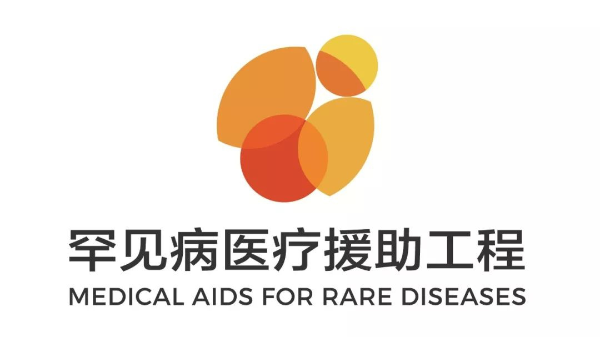
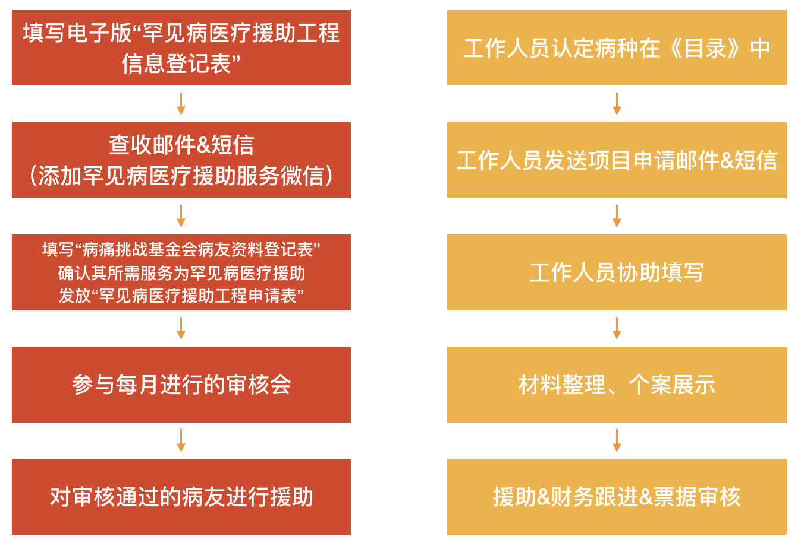

信息来自病痛挑战基金会官方公众号《项目｜罕见病医疗援助工程二期启动公告》

项目介绍
罕见病医疗援助工程（下称援助工程），是由病痛挑战基金会发起的全国性罕见病民间公益援助基金。其并非简单的医疗救助项目，而是针对罕见病个案提供医疗资源转接、各地医保信息、最新药物进展、个案资金援助的全方位支持。确保募集到的资金，更加有效地使用在受益人身上。
项目愿景
通过民间资金力量援助罕见病社群，撬动社会政策改善及多方援助资源介入，提升罕见病群体生命权、健康权的获得感，提升罕见病医疗保障水平，为罕见病群体提供有针对性的专业医疗援助。
项目目标
1.整合罕见病领域经验、资源，为罕见病群体提供有针对性的专业医疗援助；
2.整合各地医疗、医保信息，推动医保政策出台；
3.关注最新药物进展，提供医疗资源转介，病友组织支持转介服务，提升罕见病病友社会支持度。
援助对象
1.有明确诊断的中国患者；
2.确诊病种属于《关于公布第一批罕见病目录的通知》中所列的121个病种（参见文末附录）；
3.正在依照医嘱进行本病种治疗，产生相应医疗费用。
援助原则
1.总原则
公平、公正、透明；量入为出；有限援助；多方合作援助。
2.优先原则
·未成年及罕见病儿童优先援助；
·首次申请个案优先援助；
·低保、低收入或符合国家扶贫条件的罕见病家庭优先援助；
·已纳入医保或有其他联合援助，但依然无力支付的罕见病病友优先援助。
3.援助机制
一类（上限5万）
用于治疗罕见病治疗的 特效药、特食 的费用的援助，以及个人承担费用 超过20万元 的大额医疗支出援助（上限5万元）；
二类（上限1万）
A：用于罕见病病友的 药费、住院费、康复费、手术费、辅具适配 等费用（上限1万元）；
B：在A的基础上，如有 定向捐赠 ，将视情况提高上限援助金额（具体以相关合作公告为准）。
注：援助工程管理委员会有权对个别罕见病患者的援助及援助标准进行特批。特批的案例必须由援助工程审核委员会陈述理由，并在网络公示时特别指出。
项目进展
自2018年2月正式启动后，截至2019年1月31日，援助工程累计接收到全国 30 个省市自治区 1946 人次求助信息，涉及 159 多个病种；这其中， 260 余人递交申请材料， 189 人被确定为援助对象，累积拨款 2212110.73 元，涉及 41 个病种，分布在全国 27 个省市自治区。
援助工程二期（2019年2月28日至2020年2月29日）将于2019年3月1日正式启动。
在延续项目一期的援助框架基础上，病痛挑战基金会还会在 多方援助、病友服务、罕见病倡导 等方面作出新的动作，进一步完善项目服务流程，提升项目服务质量。
项目新动向
（一）更多力量与罕见携手
病痛挑战基金会将与轻松筹公益、水滴筹公益平台深度合作，在援助工程二期基础上，推动联合 个案援助 ，最大限度减轻罕见病患者的医疗负担。
（二）更多行动为罕见发声
2019年援助工程将启动 罕见病线下医学交流会 ，与各地医学专家、罕见病病友一起促进罕见病医学交流，降低罕见病误诊率，普及罕见病知识。
（三）更完善的服务
2019年2月，病痛挑战基金会与山东省立医院小儿骨科成立山东首个 罕见病爱心病房 ，将以此为基础，为各地病友提供医疗服务。未来我们计划在更多地区推动医疗服务落地，为病友就医、用药提供便利。
（四）申请更加便利
援助工程二期将调整申请流程，进一步 提升项目电子化水平 ，减少病友材料准备数量。项目一期申请病友继续申请时，无需再次提交“病痛挑战基金会-病痛挑战者之家病友信息登记表”，可直接递交“申请表”再次申请，通过审核委员会审核后获得援助。
（五）票据有效期更长
援助工程二期将延长病友须提供的 票据的有效期时长 ，由原来“申请日前6个月”调整为“申请日前12个月”。
注：牵扯跨年票据的问题，有效期计算起始时间为2018年6月。
（六）加入月捐人
如果您正在关注罕见病群体，或有意愿为病友献出一份力量，请点击“ 阅读原文 ”。
目前“罕见病医疗援助工程”腾讯乐捐筹款项目，在腾讯公益支持下已开通月捐功能， 欢迎您成为月捐人，每月给罕见病病友一个治疗的希望！
项目申请流程与注意事项
（一）病友申请流程
1.病友或其家属在线填写电子版“罕见病医疗援助工程信息登记表”
（扫码即可填写）
2.根据《关于公布第一批罕见病目录的通知》中所收录的病种，认定申请人符合申请规则；
3.向申请人发放“病痛挑战基金会病友资料登记表”；
4.申请人填写后，确认其所需服务为罕见病医疗援助；
5.向申请人发放“罕见病医疗援助工程申请表”；
6.申请人填写后，将费用发票同申请资料完整地邮寄到项目组参与每月进行的审核会；
7.对审核通过的病友进行援助。 
（流程图）
（二）时间规则
1.每月25日为申请截止日（以收到“登记表”、“申请表”为准）；
2.每月10日为审批日；
3.审批日后通知援助对象并以月为单位进行公示；
4.下一个审批日前完成上一批打款同时完成公示。
附录： 中国国家卫计委第一批罕见病名录
编者注：
其中序号为1的21-羟化酶缺乏症英文名称应为21-Hydroxylase Deficiency；
序号为19的先天性肾上腺发育不良英文名称应为Adrenal Hypoplasia Congenital（Congenital Adrenal Hypoplasia为先天性肾上腺皮质增生症的英文名称）；
序号为32的全身型重症肌无力英文名称应为General Myasthenic Gravis；
序号为48的HHH综合征英文名称应为Hyperornithinemia-Hyperammonemia-Homocitrullinuria Syndrome；
序号为88的阵发性睡眠性血红蛋白尿英文名称应为Paroxysmal Nocturnal Hemoglobinuria；
序号为105的婴儿严重肌阵挛性癫痫（Dravet 综合征）英文名称应为Severe Myoclonic Epilepsy In Infancy (Dravet Syndrome)；
序号为120的X-连锁肾上腺脑白质营养不良英文名称应为X-linked Adrenoleukodystrophy。